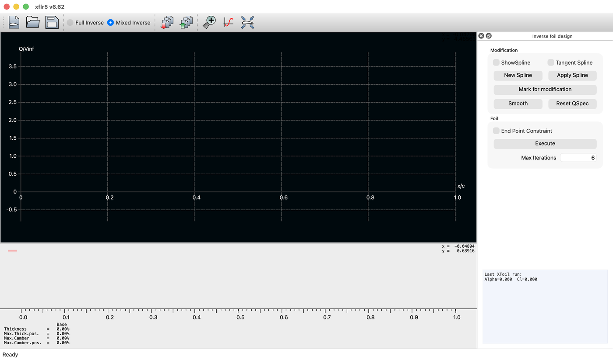
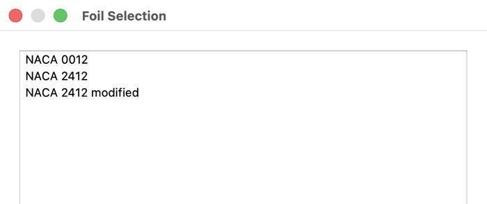
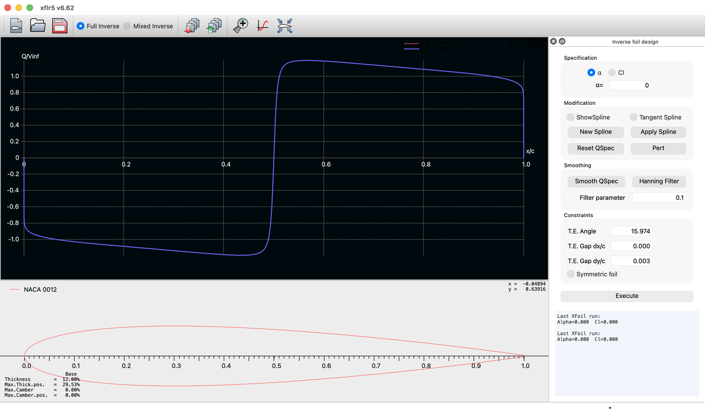
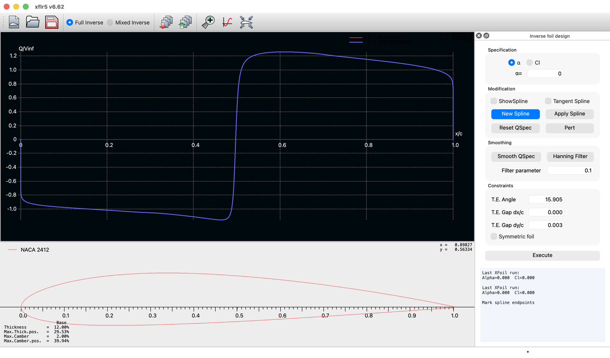
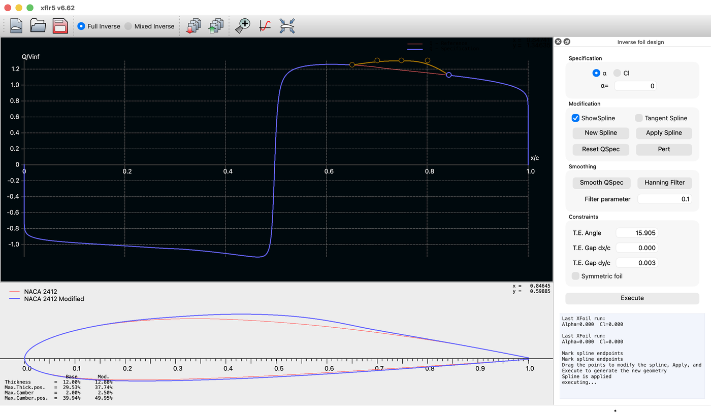
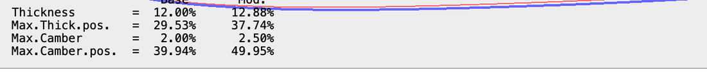
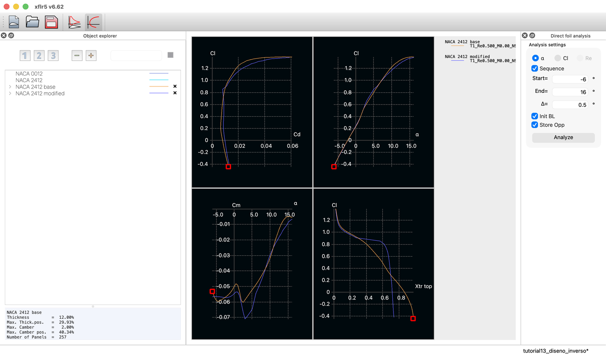
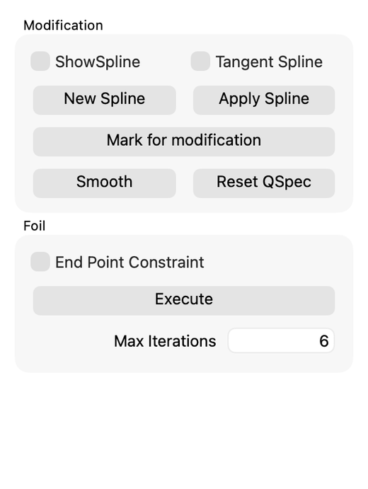
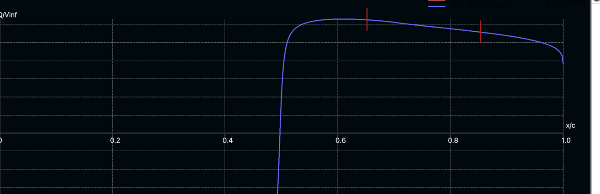

The direct problem gives the pressure of a shape. The inverse problem gives the shape of a pressure. What that exchange buys, what it costs, and how to read the plot on which the whole method rests.
XFLR5 · Tutorial 1.3
Diseño inverso
El problema directo da la presión de una forma. El problema inverso da la forma de una presión. Qué compra ese intercambio, qué cuesta, y cómo se lee la gráfica sobre la que descansa todo el método.
XFLR5 · Tutorial 1.3
Inverser Entwurf
Das direkte Problem liefert den Druck einer Form. Das inverse Problem liefert die Form eines Drucks. Was dieser Tausch einbringt, was er kostet, und wie das Diagramm zu lesen ist, auf dem das ganze Verfahren beruht.
Estimated reading: 45 minLectura estimada: 45 minLesedauer: ca. 45 minLevel: undergraduateNivel: licenciaturaNiveau: BachelorVerified on XFLR5 v6.62Verificado en XFLR5 v6.62Geprüft mit XFLR5 v6.62
Full English translation in preparation. Each section below carries a summary of its content; the complete text, figures and tables are available in the Spanish version, which the ES button above selects.
Prescribe a velocity distribution and read back the geometry it implies, identify what the plot's abscissa actually measures, and judge a redesign by comparing its polar against the original rather than by looking at the shape.
The idea
Why turning the question around is worth the trouble
The direct problem takes a shape and returns its pressure distribution; every tutorial so far has solved it. The inverse problem takes a pressure distribution and returns a shape. It is worth the trouble because the quantities an engineer actually cares about — where transition sits, whether the boundary layer separates, how wide the drag bucket is — are properties of the velocity distribution, not of the coordinates.
Scope and limits
What the module does, and what it does not
XFLR5 offers two inverse modes. Full Inverse rebuilds the whole contour from the whole specified distribution, subject to trailing-edge constraints. Mixed Inverse changes only a marked stretch and holds the rest fixed, iterating to close the contour. Neither checks that the distribution you asked for is physically sensible, and neither runs a viscous analysis: the result must be taken to the direct module and measured.
Orientation
Where it lives, and how an airfoil gets in
The module is Module ▸ XFoil Inverse Design. It opens in Mixed Inverse, not in Full Inverse. There is no File ▸ Open for airfoils here: a section enters through Foil ▸ Extract Foil, which picks from the airfoils already in the project. So the airfoil must be loaded elsewhere first.
The measurement that matters
The axis labelled x/c is not x/c
The velocity plot labels its abscissa x/c, and it is not the chord station. It is normalised arc length along the contour: one trailing edge at 0, the leading edge near 0.5, the other trailing edge at 1. Two measurements settle it — a symmetric NACA 0012 at zero incidence puts its zero crossing at exactly 0.50000, and a cambered NACA 2412 at 0.49705 against 0.49641 computed from its arc lengths. On the upper surface the practical conversion is \(x/c \approx 2(s-0.5)\).
Step 1
Modifying the velocity distribution
New Spline puts the program into a mode in which two clicks on the curve delimit the segment to edit; five control points appear, of which the first and last are fixed anchors. Dragging the three interior ones changes the specified velocity; Apply Spline writes the change into the specification.
Step 2
Executing, and reading the geometry that comes back
Execute solves for the new contour and draws it over the original, and the readout under the airfoil gains a second column, Mod., beside Base. Raising the velocity over the middle of the upper surface thickened the NACA 2412 from 12.00 % to 12.88 %, moved its maximum thickness from 29.53 % to 37.74 % of chord, and its maximum camber from 39.94 % to 49.95 %.
Step 3
Storing the airfoil and analysing it
Foil ▸ Store Foil writes the result into the project as a new section. It arrives with a different number of points than the original — 257 against 149 here — so before comparing polars the panelling has to be equalised, which Refine Globally does.
Step 4
What was gained, and what it cost
With the panelling equalised, the redesigned section cuts drag by 12.7 % at \(\alpha = 5^\circ\) and raises peak lift-to-drag from 89.2 to 108.0 — and pays for it with 34 % more drag at \(\alpha = 0^\circ\) and some 8 % more above \(6^\circ\). The mechanism is visible in the transition location, which the redesign holds near 60 % of chord where the original has already moved it to 40 %.
The other mode
Mixed Inverse: changing one stretch and holding the rest
Mark for modification delimits a target stretch with two red ticks; outside it the contour is held and the solver iterates — Max Iterations, six by default — to close the section. It is the mode for local repairs; Full Inverse is the mode for wholesale redesign.
Suggested exercise
Move the bucket somewhere else
Repeat the exercise with the flat stretch placed further forward, and measure where the drag bucket ends up. No report is expected: the point is to see that the bucket moves where the flat velocity segment is put.
Key points
Five statements to keep
The abscissa is arc length, not chord. The first and last spline points are anchors. Nothing about the result is known until its polar is measured. The panelling must be equalised before comparing. And an inverse design does not create performance: it moves it from one part of the envelope to another.
Common mistakes
Where this goes wrong
Reading the abscissa as chord station; judging a redesign by its outline; comparing polars computed with different panel counts; and assuming that a velocity distribution one can draw corresponds to an airfoil one can build.
Appendix
How the axis was verified
The visual argument rules out chord but does not prove what the abscissa is. The exported data were compared against arc lengths computed from the airfoil's analytic definition: exact agreement for the symmetric section, six ten-thousandths for the cambered one. Also: the coordinate readout at the right of the plot reports the airfoil drawing below, not the velocity graph.
Sources
References
Drela's XFOIL papers for the mixed-inverse formulation, Abbott and von Doenhoff for the laminar-flow sections whose design logic this reproduces, and the XFLR5 guidelines for the interface.
Objetivos de aprendizaje
Qué se debe poder hacer al terminar
Los tres tutoriales anteriores resolvieron siempre el mismo problema: dada una geometría, obtener su comportamiento. Este invierte la pregunta. Al terminar esta guía debe ser posible:
Explicar en qué se diferencia el problema inverso del directo, y por qué a un diseñador le interesa el primero.
Cargar un perfil en el módulo XFoil Inverse Design y leer correctamente la gráfica sobre la que se trabaja, empezando por saber qué mide su eje horizontal.
Prescribir una distribución de velocidad con la herramienta de spline y obtener la geometría que le corresponde.
Guardar el resultado, homogeneizar su panelado y medirlo contra el original en el módulo directo.
Juzgar un rediseño por su polar y no por su silueta, y reconocer que lo que se gana en una zona del dominio de vuelo se paga en otra.
La idea
Por qué vale la pena invertir la pregunta
Un perfil alar se puede plantear de dos maneras. La primera es la que se ha usado hasta aquí: se dan las coordenadas del contorno y el método devuelve la distribución de velocidad sobre él, y con ella la polar. Es el problema directo, y tiene siempre solución, porque toda geometría produce algún campo de flujo.
La segunda es la inversa: se prescribe la distribución de velocidad que se quiere y el método devuelve la geometría que la produciría. Es el problema inverso, y no siempre tiene solución, porque no toda distribución que se puede dibujar corresponde a un contorno cerrado, sin cruces y con un borde de fuga físicamente realizable.
Figura 1.El problema directo y el problema inverso. Todo lo hecho hasta ahora en esta serie recorre la fila de arriba: se da la geometría y el programa devuelve la distribución de velocidad y, con ella, la polar. El diseño inverso recorre la fila de abajo: se prescribe la distribución y el método devuelve la geometría que la produciría. El cambio de dirección no es gratuito: no toda distribución que se puede dibujar corresponde a un perfil que se pueda construir, y de ahí vienen las restricciones de borde de fuga que el panel impone.
Por qué le sirve a un diseñador
La pregunta natural es por qué tomarse la molestia. La respuesta es que las magnitudes que de verdad le importan a un diseñador son propiedades de la distribución de velocidad, no de las coordenadas. Dónde transiciona la capa límite depende del gradiente de presión. Si el flujo se separa o no, también. Cuán ancha es la cubeta de arrastre que se discutió en el Tutorial 1.2 depende de sobre qué intervalo de ángulos se conserva un gradiente favorable. Nada de eso se lee en una lista de coordenadas.
Dicho de otro modo: en el problema directo se toca aquello que no se entiende —la geometría— para conseguir un efecto sobre aquello que sí se entiende —la distribución de velocidad—. El problema inverso permite actuar directamente sobre lo segundo y dejar que el método se encargue de lo primero.
Esa es la lógica con la que se diseñaron las series de flujo laminar de la NACA en los años cuarenta, y la que reproduce esta guía a escala de un ejercicio: se toma el NACA 2412 del Tutorial 1.1, se le impone un tramo de velocidad plana sobre el extradós, y se mide qué perfil sale y cuánto mejor —o peor— vuela.
Alcance y límites
Qué hace el módulo y qué no hace
XFLR5 ofrece dos métodos inversos, y conviene saber cuál se está usando antes de tocar nada, porque el panel de control cambia por completo entre uno y otro.
Full Inverse
Mixed Inverse
Qué reconstruye
El contorno completo, a partir de toda la distribución especificada
Sólo el tramo marcado; el resto queda exactamente igual
Especificación
\(\alpha\) o \(C_l\) de diseño
No la pide: hereda la del perfil de partida
Restricciones
Ángulo y separación del borde de fuga, y perfil simétrico si se marca
Ninguna sobre el borde de fuga: no se toca
Suavizado
Smooth QSpec y filtro de Hanning con parámetro ajustable
Smooth, sin parámetro
Cómo resuelve
De una vez
Iterando hasta cerrar el contorno; Max Iterations, seis por omisión
Cuándo conviene
Rediseño de fondo: mover la cubeta de arrastre, cambiar el carácter del perfil
Retoque local: corregir un pico de succión o un gradiente en una zona concreta
Tabla 1.Los dos modos inversos. La diferencia de fondo no está en los botones sino en cuánto del perfil queda libre: Full Inverse rehace el contorno entero y necesita restricciones para que cierre; Mixed Inverse congela todo salvo un tramo y por eso itera.
Dos límites que conviene tener presentes
Hay dos límites que los dos comparten y que conviene tener presentes desde el principio.
El primero: ninguno de los dos comprueba que la distribución pedida tenga sentido. Se puede especificar una velocidad que exija un perfil con espesor negativo o con el contorno cruzado; el método devolverá algo, y ese algo no será un perfil. Las restricciones de borde de fuga del modo completo acotan el problema, pero no lo resuelven.
El segundo, y más importante en la práctica: el módulo inverso no ejecuta ningún análisis viscoso por su cuenta. Trabaja sobre la distribución de velocidad del flujo potencial —el menú Foil ofrece mostrar una curva Q-Viscous, pero ésa proviene de un análisis hecho en el módulo directo, no de aquí—. No sabe dónde transiciona la capa límite, ni si se separa, ni cuánto arrastre tiene el perfil que acaba de producir. Todo eso hay que ir a medirlo al módulo de análisis directo, y hasta que no se mide no se sabe si el rediseño sirvió de algo.
El error de fondo de este tutorial. Es tentador mirar el perfil nuevo, verlo más elegante que el de partida y darlo por bueno. Un perfil no se juzga por su silueta. La sección Paso 4 muestra un rediseño que parece una mejora clara y que, en la mitad del dominio de vuelo, es peor que el original.
Orientación
Dónde está, y cómo entra un perfil
El módulo se abre en Module ▸ XFoil Inverse Design. Dos cosas sorprenden al entrar.

Figura 2.El módulo al entrar, todavía vacío. Dos detalles que conviene notar desde el principio. El primero: la barra superior abre en Mixed Inverse, no en Full Inverse, de modo que el panel de la derecha no es el que describen la mayoría de las guías. El segundo: el recuadro inferior izquierdo declara espesor y curvatura en 0.00 %, porque todavía no hay ningún perfil dentro.
La primera es que el módulo arranca en Mixed Inverse, no en Full Inverse. La mayoría de las guías describen el panel del modo completo, de modo que quien siga esas instrucciones al pie de la letra buscará controles que no están a la vista. El cambio se hace con los dos botones de radio de la barra superior.
Cómo entra un perfil
La segunda es que en este módulo no se abren archivos de perfil. El menú File sólo maneja proyectos. Un perfil entra por Foil ▸ Extract Foil, que abre un selector con los perfiles que ya están cargados en el proyecto.

Figura 3.Así entra un perfil: Foil ▸ Extract Foil. En este módulo el menú File no abre archivos .dat. El perfil se toma de los que ya están en el proyecto, y este diálogo es el que los lista. La consecuencia práctica es que el perfil hay que cargarlo antes en Direct Foil Design, o abrir un proyecto que ya lo contenga.
La consecuencia práctica es que el orden de trabajo está fijado: primero se carga o se crea el perfil en Direct Foil Design —o se abre un proyecto que ya lo contenga—, y sólo después se entra al módulo inverso. El proyecto que acompaña a esta guía parte del NACA 2412 del Tutorial 1.1: se pidieron 150 paneles en el diálogo y el programa declara 149, que es la cifra que hay que tener presente al comparar.
Figura 4.El NACA 2412 cargado, en modo Full Inverse. La curva azul es la distribución de velocidad \(Q/V_\infty\) que corresponde al perfil actual: es el punto de partida, y es la que se va a modificar. El panel de la derecha suma cuatro grupos que el modo mixto no tiene: la especificación de \(\alpha\) o \(C_l\), el suavizado, las restricciones de borde de fuga y el botón Execute. Abajo a la izquierda, la geometría del perfil de partida.
Las tres zonas de la ventana
Con el perfil dentro, la ventana se divide en tres. Arriba, la distribución de velocidad \(Q/V_\infty\), que es donde se trabaja. Abajo, el perfil al que corresponde. A la derecha, el panel de control y el registro de operaciones, que va indicando qué espera el programa en cada momento y conviene leer.
La medición que importa
El eje que dice x/c y no es x/c
Antes de modificar nada hay que saber leer la gráfica, y aquí hay una trampa que conviene desarmar de entrada, porque desordena todo lo que sigue.
El eje horizontal está rotulado x/c y no es \(x/c\). El rótulo aparece así en la gráfica y también en la cabecera del archivo que produce Graph ▸ Export Graph, de modo que no es un descuido de la pantalla.
Que no puede ser la cuerda se ve casi sin medir. Si lo fuera, el extremo izquierdo del eje sería el borde de ataque, y alrededor de un borde de ataque la velocidad arranca en cero y crece por las dos caras. La curva de la figura 4 hace lo contrario: se anula en un solo punto del extremo y acto seguido está ya en \(-0.73\), bajando hacia \(-1.0\). Eso es un borde de fuga.
La prueba
La prueba limpia es un perfil simétrico a incidencia nula, cuyo punto de estancamiento está exactamente en el borde de ataque por razones de simetría.

Figura 5.La prueba: un NACA 0012 a \(\alpha = 0\). Un perfil simétrico a incidencia nula tiene su punto de estancamiento exactamente en el borde de ataque, es decir en \(x/c = 0\). Si la abscisa fuera la cuerda, la curva cruzaría el cero en el extremo izquierdo del eje. Cruza en el centro. Además la curva es antisimétrica: sus dos máximos valen ±1.18838, iguales a cinco decimales, y la velocidad se anula en los dos extremos del eje, que es lo que impone la condición de Kutta en un borde de fuga anguloso.
El cruce por cero cae en el centro del eje, no en su extremo. Lo que mide la abscisa es la longitud de arco normalizada a lo largo del contorno: se sale del borde de fuga por una cara, se rodea el borde de ataque y se vuelve al borde de fuga por la otra.
Figura 6.Qué mide realmente la abscisa. La coordenada del eje recorre el contorno cerrado del perfil: vale 0 en el borde de fuga, avanza por el intradós hasta el borde de ataque —que cae cerca de 0.50— y sigue por el extradós hasta volver al borde de fuga en 1. Por eso hay un cero de la velocidad en cada extremo del eje, que son el mismo punto físico, y otro en el centro, que es el estancamiento del borde de ataque. La escala de abajo muestra la cuerda real para comparar: la mitad derecha del eje se reparte a lo largo de toda la cuerda del extradós.
De ahí que la velocidad se anule en los dos extremos del eje —que son el mismo punto físico— y otra vez en el centro, que es el estancamiento del borde de ataque. El signo cambia ahí porque lo que se grafica es la componente tangencial al contorno en el sentido del recorrido: negativa mientras se avanza contra la corriente por una cara, positiva cuando se avanza con ella por la otra.
Y el eje vertical, ¿qué tiene que ver con el \(C_p\) del Tutorial 1.1?
Esta gráfica muestra velocidad y aquélla mostraba presión, pero son la misma información. Para flujo incompresible, Bernoulli las liga con una sola relación:
Se comprueba con las cifras de esta misma corrida. El pico de succión del NACA 2412 a \(\alpha = 0\) vale \(Q/V_\infty = 1.25516\), que por esa relación da \(C_p = -0.575\); el módulo directo reporta \(-0.5625\) para el mismo caso. La diferencia del 2 % es el espesor de desplazamiento de la capa límite, que la relación potencial no ve.
Por qué el módulo inverso trabaja con velocidad y no con presión. Porque el cuadrado de la relación destruye el signo. En \(C_p\), el extradós y el intradós se separan en dos ramas que hay que distinguir a mano; en \(q/V_\infty\) el signo las distingue solo, y el punto de estancamiento queda marcado por el cruce. Para leer un perfil conviene el \(C_p\); para diseñarlo, la velocidad.
La conversión que hace falta para trabajar
Para marcar un tramo hay que poder pasar de una escala a la otra. La conversión exacta exige integrar el arco, pero hay una regla que basta para casi todo.
\(s\), el eje del gráfico
\(x/c\) real
Regla \(2(s-0.5)\)
0.60
0.189
0.200
0.65
0.291
0.300
0.70
0.393
0.400
0.75
0.495
0.500
0.80
0.597
0.600
0.85
0.698
0.700
0.90
0.799
0.800
Tabla 2.Del eje del gráfico a la cuerda real, en el extradós. Correspondencia calculada para el NACA 2412. Salvo muy cerca de la nariz, la regla \(x/c \approx 2(s - 0.5)\) acierta dentro de una centésima, y es suficiente para trabajar. En el intradós la regla es \(x/c \approx 2(0.5 - s)\).
Sobre el extradós, \(x/c \approx 2(s - 0.5)\); sobre el intradós, \(x/c \approx 2(0.5 - s)\). El error es de una centésima de cuerda salvo muy cerca del borde de ataque, donde el contorno se curva mucho y el arco avanza sin que avance la cuerda. Con esa regla ya se puede trabajar; quien quiera ver cómo se comprobó todo esto con cifras lo tiene en el apéndice.
Paso 1
Modificar la distribución de velocidad
Aquí empieza el trabajo. El ciclo completo son seis operaciones, siempre en el mismo orden, y el registro de la derecha va anunciando cuál espera el programa:
New Spline — el registro responde Mark spline endpoints.
Dos clics sobre la curva, que delimitan el tramo a editar.
Arrastrar los puntos de control interiores hasta la forma deseada.
Apply Spline — el registro responde Spline is applied.
Execute — el registro responde executing....
Foil ▸ Store Foil para conservar el resultado.
Conviene detenerse en los dos primeros, porque no hacen lo que su nombre sugiere. New Spline no crea ningún spline: pone el programa en un modo de espera. Y es un conmutador, no un botón: un clic lo enciende, dos lo dejan apagado, y entonces los clics sobre la curva no marcan nada. Si el registro no dice Mark spline endpoints, el modo no está activo.
Con el modo encendido, los dos clics siguientes sobre la curva fijan los extremos del tramo. Aparecen entonces cinco puntos de control repartidos por igual.

Figura 7.El spline, con sus cinco puntos. Tras New Spline, dos clics sobre la curva delimitan el tramo a editar y aparecen cinco puntos de control repartidos por igual. El primero y el último son anclas: no se mueven, y existen para que el tramo editado empalme sin escalón con el resto de la distribución. Sólo los tres interiores responden al arrastre.
El primero y el último no se mueven. Son anclas, y existen para que el tramo modificado empalme sin escalón con el resto de la distribución. Sólo los tres interiores responden al arrastre. Intentar mover los extremos y concluir que la herramienta no funciona es un tropiezo frecuente.
Qué tramo marcar, y hasta dónde subirlo
Para este ejemplo se marcó \(s \in [0.65,\ 0.85]\) —la cuerda entre el 29 % y el 70 % del extradós, por la tabla 2— y se subieron los tres puntos interiores hasta formar un tramo aproximadamente plano en \(Q/V_\infty \approx 1.30\).
La elección no es arbitraria. Un tramo de velocidad constante es un tramo de gradiente de presión nulo, y un gradiente nulo no empuja a la capa límite a transicionar. Es la idea que hay detrás de todo perfil de flujo laminar: estirar hacia atrás la zona de velocidad plana o creciente para que la transición se retrase, y con ella el arrastre de fricción turbulento.
Hasta dónde se puede subir, en cambio, no es libre, y hay una cuenta que lo fija. El área con signo bajo la curva es la circulación, y la circulación es la sustentación:
Se puede comprobar con los datos exportados. Integrando la curva del NACA 2412 sobre el arco y multiplicando por su perímetro, \(2.0414\,c\), sale \(C_l = 0.255\); el programa reporta \(0.229\) a \(\alpha = 0\). La diferencia del 10 % es el descurvado que provoca la capa límite, que la integral potencial no ve. En el NACA 0012 a incidencia nula el área da exactamente cero, como debe ser.
La consecuencia práctica. Subir la velocidad en una zona obliga a bajarla en otra, porque el área total está sujeta al \(C_l\) que se especificó arriba. Si se levanta un tramo sin moderación, el método no tiene más salida que devolver un contorno que se cruza a sí mismo o que no cierra. El suavizado —Smooth QSpec y el filtro de Hanning— quita además las irregularidades que el arrastre a mano introduce y que el solucionador amplifica.
Con el tramo dibujado, Apply Spline lo escribe en la distribución especificada. Hasta ese momento el spline es sólo un dibujo encima de la curva; después, es la distribución que el método va a intentar reproducir.
Paso 2
Ejecutar y leer la geometría que sale
Execute resuelve el contorno que corresponde a la distribución especificada y lo dibuja superpuesto al de partida.

Figura 8.Lo que devuelve Execute. Arriba, la distribución especificada ya incorpora el tramo levantado. Abajo, el perfil original en rojo y el resultante en azul, superpuestos a la misma cuerda: el rediseñado es visiblemente más grueso en la mitad posterior. A la derecha, el registro enumera la secuencia completa —marcar extremos, arrastrar, aplicar, ejecutar—, que es la misma en los dos modos.
El resultado más útil no es el dibujo sino el recuadro de la esquina inferior izquierda, que en cuanto hay un perfil modificado pasa de una columna a dos.

Figura 9.La lectura gana una segunda columna. En cuanto hay un perfil modificado, el recuadro inferior izquierdo pasa de una columna a dos: Base, la del perfil de partida, y Mod., la del resultado. Es la manera más rápida de cuantificar lo que hizo el cambio de velocidad, y la que alimenta la tabla 3.
Base
Modificado
Cambio
Espesor máximo
12.00 %
12.88 %
+0.88 puntos
Posición del espesor máximo
29.53 %
37.74 %
+8.21 puntos
Curvatura máxima
2.00 %
2.50 %
+0.50 puntos
Posición de la curvatura máxima
39.94 %
49.95 %
+10.01 puntos
Tabla 3.Lo que el cambio de velocidad le hizo a la geometría. Los cuatro números que el programa muestra bajo el perfil, antes y después. Subir la velocidad sobre el tramo \(s \in [0.65,\ 0.85]\) —que es \(x/c\) entre 0.29 y 0.70 del extradós— engrosó el perfil y corrió hacia atrás tanto el espesor máximo como la curvatura máxima, que es exactamente la receta geométrica de un perfil de flujo laminar.
Por qué salió ese perfil y no otro
Los cuatro números cuentan una historia coherente. Subir la velocidad sobre la mitad del extradós engrosó el perfil y corrió hacia atrás sus dos máximos: el de espesor, del 29.5 % al 37.7 % de la cuerda; el de curvatura, del 39.9 % al 50.0 %. Ambos se movieron dentro de la ventana que se modificó, que iba del 29 % al 70 %.
Eso es exactamente lo que dice la teoría de perfil delgado leída al revés. Para que el flujo acelere menos y más lentamente sobre una zona, esa zona tiene que ser más recta y más gruesa; y para que el punto de velocidad máxima se retrase, el punto de espesor máximo tiene que retrasarse con él. El método no hizo nada misterioso: tradujo una condición sobre la velocidad en la condición geométrica equivalente.
Comparar con la familia NACA. Un perfil NACA de cuatro dígitos tiene el espesor máximo fijo en el 30 % de la cuerda. Las series de flujo laminar de seis dígitos lo retrasan, y lo declaran de forma indirecta: su segundo dígito da la posición de la presión mínima en décimos de cuerda —un 65-218 la tiene al 50 %—, que es la manera que tiene esa familia de decir hasta dónde se extiende el tramo de gradiente favorable. El rediseño de este ejercicio corrió el espesor máximo del 29.5 % al 37.7 % por su cuenta, sin que nadie se lo pidiera en esos términos.
Paso 3
Guardar el perfil y analizarlo
Foil ▸ Store Foil guarda el resultado en el proyecto como un perfil más, con su propio nombre. A partir de ahí se comporta como cualquier otro: se le pueden definir análisis, correr polares y compararlo.
Antes de compararlo hay que resolver un detalle que echa a perder muchas comparaciones.
El perfil que sale no tiene el panelado del que entró. El NACA 2412 de partida tenía 149 paneles; el que devolvió el módulo inverso tiene 257. El Tutorial 1.2 ya advertía que comparar polares calculadas con panelados distintos no es comparar. Hay que igualarlos antes.
Igualar el panelado
Se igualan con Refine Globally, que pide el número de paneles deseado. El refinado produce un perfil nuevo, de modo que el programa pide un nombre para él y el original queda intacto.
Una observación que no se pudo cerrar. El comando aparece bajo Design en XFoil Direct Analysis y bajo Foil en Direct Foil Design. En las corridas de esta guía el refinado sólo surtió efecto desde el segundo módulo; desde el primero el conteo de paneles no cambió. No se determinó la causa, así que conviene verificar el número de paneles en el recuadro inferior izquierdo después de refinar, en vez de darlo por hecho.
Para esta guía se refinó el NACA 2412 original a 257 paneles y se guardó aparte, de manera que la comparación enfrenta dos perfiles con idéntica discretización. Lo que eso cambia, y lo que no, está medido en la tabla 5.
Con los dos perfiles listos, el análisis es el del Tutorial 1.1 y no tiene ninguna novedad: Analysis ▸ Define an Analysis, Type 1, \(Re = 500\,000\), \(M = 0\), \(N_{\mathrm{crit}} = 9\), y un barrido de \(-6°\) a \(16°\) cada medio grado.
Paso 4
Qué se ganó y qué se pagó
Esta es la sección que decide si el ejercicio sirvió de algo. Las dos polares, superpuestas:

Figura 10.Las dos polares superpuestas en el módulo directo. La comparación tal como la presenta XFLR5, con el perfil base en naranja y el rediseñado en azul. La gráfica más informativa es la de abajo a la derecha, \(C_l\) contra Xtr top: la meseta del rediseñado —la transición que no se mueve mientras la sustentación crece— es lo que distingue a un perfil de flujo laminar de uno convencional.
Base
Modificado
\(\alpha_{L=0}\)
−2.244°
−2.230°
Pendiente de sustentación (ajuste 0–4°)
0.1241 /°
0.1360 /°
\(C_{l,\max}\)
1.389 a 15.5°
1.378 a 16.0°
\(C_{d,\min}\)
0.00631 a 0° \((C_l = 0.23)\)
0.00788 a 5° \((C_l = 0.85)\)
\((L/D)_{\max}\)
89.2 a 5.5°
108.0 a 5.0°
Tabla 4.Las dos polares, resumidas. Type 1, \(Re = 500\,000\), \(M = 0\), \(N_{\mathrm{crit}} = 9\), ambos perfiles con 257 paneles. La pendiente y el ángulo de sustentación nula apenas se mueven: el rediseño no cambió el carácter del perfil, cambió dónde es eficiente.
La primera impresión
A primera vista el rediseño parece un éxito rotundo: la eficiencia máxima sube de 89.2 a 108.0, un 21 % más. Pero la eficiencia máxima es un punto, y un perfil no se juzga en un punto —esa fue la lección del Tutorial 1.2—. Conviene mirar el dominio completo.
Figura 11.Lo que se ganó y lo que se pagó. El perfil rediseñado sólo tiene menos arrastre que el original en una ventana estrecha, entre unos 4° y 5.5°; fuera de ella pierde, y a ángulo de ataque nulo pierde mucho —un 34 % más de arrastre—. El diseño inverso no creó eficiencia: la movió de un sitio a otro del dominio de vuelo. Ambas polares se calcularon con el mismo panelado para que la comparación sea legítima.
El dominio completo
El panorama cambia. El perfil rediseñado sólo tiene menos arrastre en una ventana estrecha, aproximadamente entre 4° y 5.5°. Fuera de ella pierde, y a ángulo de ataque nulo pierde mucho: un 34 % más de arrastre que el original. Por encima de 6° también pierde, en torno a un 8 %.
\(\alpha\)
Efecto del panelado sobre el mismo perfil
Efecto del rediseño, con el panelado ya igualado
0°
+0.00 %
+33.9 %
2°
+0.00 %
+22.0 %
4°
+0.24 %
−1.0 %
5°
+0.11 %
−12.7 %
6°
+0.10 %
+8.2 %
10°
+0.42 %
+9.3 %
15.5°, ya en pérdida
−4.05 %
−0.8 %
Tabla 5.La comprobación que legitima la comparación. El módulo inverso devolvió un perfil de 257 puntos frente a los 149 del original, y comparar polares con panelados distintos no es válido. Para separar los dos efectos se corrió el perfil base dos veces, con 149 y con 257 paneles. En todo el intervalo donde se compara —de 0° a 10°— el panelado mueve el arrastre a lo sumo medio por ciento, mientras el rediseño lo mueve entre un −13 % y un +34 %: la diferencia es geometría, no discretización. La última fila es un aviso aparte, y se comenta abajo.
La tabla 5 responde de paso a la objeción obvia —que la diferencia venga del panelado— y la descarta: en el intervalo donde se compara, el panelado mueve el arrastre a lo sumo medio por ciento, mientras el rediseño lo mueve decenas de por ciento.
La última fila de la tabla dice otra cosa, y conviene no pasarla por alto. Pasados los 11° el efecto del panelado crece deprisa, y a 15.5° llega al 4 %: cuatro veces el efecto que ahí tiene el rediseño. No es contradictorio, es donde el método es más frágil. Cerca de la pérdida la capa límite está a punto de separarse, la solución viscosa converge con dificultad y el resultado pasa a depender de cuántos paneles resuelvan la nariz. La regla que sale de aquí es que una comparación cerca de la pérdida exige igualar el panelado con más cuidado todavía que una en crucero, y que conviene desconfiar de diferencias de pocos por ciento en \(C_{l,\max}\) entre perfiles panelados distinto.
El mecanismo
El mecanismo se ve mejor en la variable que lo causa.
Figura 12.El mecanismo, visto en la transición. Esta es la gráfica que explica la anterior. En el perfil original la transición se adelanta de forma continua conforme sube el ángulo de ataque, del 73 % de la cuerda al 40 % en cinco grados. En el rediseñado se mantiene por encima del 61 % hasta los 4.5° y todavía en el 56 % a los 5°, porque el tramo de velocidad plana suprime el gradiente adverso que la provocaba, y sólo entonces se desploma. Ese tramo laminar más largo es, literalmente, el arrastre que se ahorró.
En el perfil original la transición se adelanta de forma continua conforme crece el ángulo de ataque: del 73 % de la cuerda a ángulo nulo al 40 % a cinco grados. En el rediseñado se mantiene por encima del 61 % hasta los 4.5°, todavía en el 56 % a los 5°, y sólo entonces se desploma. Ese tramo laminar que no se mueve es el arrastre que se ahorró, y coincide en ángulo con la ventana donde el perfil rediseñado gana.
El diseño inverso no creó eficiencia: la movió. El perfil de partida tenía su mínimo de arrastre en \(C_l = 0.23\), que es casi vuelo sin sustentación. El rediseñado lo tiene en \(C_l = 0.85\), que es un coeficiente de crucero razonable. Para un avión que pase su vida cerca de ese punto, el cambio es una mejora grande. Para uno que trabaje repartido por todo el dominio, es un empeoramiento.
Esa es la cubeta de arrastre del Tutorial 1.2, ahora fabricada a propósito en vez de encontrada en un catálogo. Y el precio —peor fuera de la cubeta— es el mismo que pagan los perfiles de flujo laminar reales.
El otro modo
Mixed Inverse: cambiar un tramo sin tocar el resto
El otro modo resuelve un problema distinto. Full Inverse rehace el contorno entero; a veces lo que se quiere es corregir una zona concreta y dejar el resto intacto.

Figura 13.El panel de Mixed Inverse. Más corto que el de Full Inverse y con dos controles que aquél no tiene: Mark for modification, que delimita el tramo que sí puede cambiar, y Max Iterations, porque cerrar el contorno con el resto congelado exige iterar. A cambio, no ofrece especificación de \(\alpha\) ni restricciones de borde de fuga: no las necesita, porque el borde de fuga no se toca.
Los dos controles propios
La diferencia visible está en dos controles. Mark for modification delimita, con dos clics sobre la curva, el tramo del contorno que sí puede cambiar.

Figura 14.El segmento objetivo, marcado. Las dos marcas rojas verticales delimitan el único tramo del contorno que el método puede mover. Fuera de ellas la geometría queda exactamente como estaba, lo que convierte a este modo en el adecuado para retocar un perfil que ya funciona en lo demás.
Fuera de esas dos marcas la geometría queda exactamente como estaba. Esa restricción es la que obliga al segundo control: Max Iterations, seis por omisión. Cerrar un contorno cuando la mayor parte está congelada no se consigue de una vez, y el método itera hasta que el perfil cierra o se agotan las iteraciones.
A cambio, el panel no ofrece ni especificación de \(\alpha\) ni restricciones de borde de fuga: no le hacen falta, porque el borde de fuga está fuera del tramo editable y no se toca.
Cuál usar. Mixed Inverse para retoques: suavizar un pico de succión que dispara la transición, corregir un gradiente adverso demasiado brusco antes del borde de fuga. Full Inverse para lo que hizo este tutorial: cambiar el carácter del perfil, mover la cubeta de arrastre entera a otro coeficiente de sustentación.
Nota sobre el alcance de esta sección. Los controles y el marcado del segmento están verificados sobre el programa, pero la ejecución completa de un ciclo en modo mixto no se documentó en esta guía. Se añadirá cuando esté comprobada con el mismo detalle que el resto.
Práctica sugerida
Mover la cubeta a otro sitio
Esta práctica no se entrega. Es la manera más rápida de comprobar que el procedimiento se entendió, y de poner a prueba la afirmación central de la guía: que la cubeta de arrastre va a donde se pone el tramo de velocidad plana. La corrida completa toma unos veinte minutos.
Enunciado. Repetir el rediseño de esta guía sobre el mismo NACA 2412, pero con el tramo plano más adelante, y determinar a qué coeficiente de sustentación queda esta vez el mínimo de arrastre.
Condiciones. Tramo marcado en \(s \in [0.55,\ 0.75]\) —la cuerda entre el 10 % y el 50 % del extradós, por la tabla 2—; velocidad aplanada en \(Q/V_\infty \approx 1.30\); polar Type 1, \(Re = 500\,000\), \(M = 0\), \(N_{\mathrm{crit}} = 9\), con el panelado igualado al del perfil base.
El procedimiento, en corto
Cargar el NACA 2412 en Direct Foil Design y llevarlo al módulo inverso con Foil ▸ Extract Foil.
Pasar a Full Inverse y marcar el tramo con New Spline y dos clics.
Levantar los tres puntos interiores, Apply Spline, Execute.
Anotar los cuatro números de la columna Mod. antes de seguir.
Foil ▸ Store Foil, igualar el panelado y correr la polar.
Registro de resultados
Caso
Tramo plano marcado
\(x_{t,\max}/c\)
\(C_{d,\min}\)
a qué \(C_l\)
\((L/D)_{\max}\)
\(C_d\) a \(0^\circ\)
NACA 2412 base
—
29.5 %
0.00631
0.23
89.2
0.00631
Rediseño de esta guía
\(s\in[0.65,0.85]\)
37.7 %
0.00788
0.85
108.0
0.00845
Rediseño del ejercicio
\(s\in[0.55,0.75]\)
Tabla 6.Plantilla de registro. Seis magnitudes bastan para saber si un rediseño inverso sirvió de algo y a costa de qué. Las dos primeras columnas salen del recuadro de geometría; las cuatro últimas, de la polar. La fila de la guía está llena para poder contrastar.
Preguntas que orientan la lectura
¿Hacia dónde se movió el espesor máximo? El tramo marcado va del 10 % al 50 % de la cuerda; compárese con el rediseño de esta guía, donde iba del 29 % al 70 % y el espesor máximo quedó en 37.7 %.
¿A qué \(C_l\) quedó el mínimo de arrastre, comparado con el 0.85 de esta guía? ¿Subió o bajó, y es eso lo que cabía esperar?
¿Qué pasó con el arrastre a ángulo de ataque nulo? En esta guía empeoró un 34 %. ¿Mejoró ahora, y por qué tendría que hacerlo?
Mírese la gráfica \(C_l\) contra Xtr top. ¿Hay meseta? ¿Es más larga o más corta que la de la figura 12, y hasta qué \(C_l\) llega?
Si un avión vuela en crucero a \(C_l = 0.45\), ¿cuál de los tres perfiles de la tabla le conviene? Razónese con las cifras, no con la silueta.
La pregunta que da sentido al ejercicio es la última, porque revela lo que este tutorial no enseña: el diseño inverso permite elegir el coeficiente de sustentación en el que un perfil es eficiente, pero no dice cuál elegir. Ese dato —el \(C_l\) de crucero— viene del peso, la superficie alar y la velocidad de la aeronave, y no aparece en ninguna parte de esta guía. Es el puente hacia el bloque del ala.
Como comprobación adicional, y más exigente: bajar la velocidad en lugar de subirla, y predecir antes de ejecutar qué le va a pasar al espesor.
Puntos clave
Cinco afirmaciones que conviene retener
De esta guía conviene retener cinco cosas.
Una. La abscisa del gráfico inverso está rotulada x/c y es longitud de arco sobre el contorno: cero y uno son el mismo borde de fuga, y el borde de ataque cae cerca de 0.5. Dos. Del spline sólo se mueven los tres puntos interiores; los extremos son anclas. Tres. El módulo inverso no calcula nada viscoso: del perfil que devuelve no se sabe nada hasta que se mide su polar. Cuatro. El perfil resultante trae otro panelado, y hay que igualarlo antes de comparar. Cinco. Un rediseño inverso no crea eficiencia; la traslada de una zona del dominio de vuelo a otra, y conviene saber cuál se está sacrificando.
Y una relación que resume el oficio: la posición del tramo de velocidad plana fija la posición del espesor máximo, y la posición del espesor máximo fija el coeficiente de sustentación en el que el perfil es eficiente.
Dónde se pone el tramo de velocidad plana decide hacia dónde se corre el espesor máximo, y la posición del espesor máximo decide a qué coeficiente de sustentación queda la cubeta de arrastre. La cadena es cualitativa, no una fórmula: en este ejercicio el tramo plano ocupó del 29 % al 70 % de la cuerda, el espesor máximo se fue al 37.7 % —el tercio delantero de esa ventana, no su centro— y la cubeta quedó en \(C_l = 0.85\). Para predecirlo con cifras hay que ejecutar y medir, que es justamente lo que hace el ejercicio propuesto.
Errores frecuentes
Dónde se tuerce esto
Cuatro maneras de equivocarse con este módulo, todas comprobadas.
Leer la abscisa como si fuera la cuerda. Es el error que más desordena: lleva a creer que se está modificando el 70 % de la cuerda cuando en realidad se toca el 40 %, y a buscar el pico de succión donde no está. La regla \(x/c \approx 2(s-0.5)\) lo resuelve.
Juzgar el rediseño por su silueta. El perfil de la figura 8 se ve mejor que el original y es peor que él en la mitad del dominio de vuelo. La única prueba admisible es la polar, y hay que mirarla completa, no sólo su mejor punto.
Comparar polares con panelados distintos. El módulo devuelve un perfil con más puntos de los que entraron. La diferencia que introduce es pequeña —medio por ciento— pero es gratuita de evitar, y quien no la controla nunca sabe cuánta de la diferencia observada es física.
Suponer que toda distribución dibujable es realizable. El método no avisa de que la distribución pedida es imposible: devuelve el contorno que más se le parece, que puede ser un perfil cruzado o con espesor negativo. Si el resultado es absurdo, el problema está en lo que se pidió, no en el programa.
Y un tropiezo menor de manejo, por si ahorra tiempo: el botón New Spline es un conmutador. Un clic lo activa; dos lo dejan como estaba, y entonces los clics sobre la curva no marcan nada.
Apéndice
Cómo se verificó el eje
Esta sección no hace falta para usar el módulo. Recoge cómo se comprobó que la abscisa de la gráfica es longitud de arco, por si alguien quiere rehacerlo o dudar de ello con fundamento.
El argumento visual de la figura 5 basta para descartar que el eje sea la cuerda, pero no prueba qué es. Para eso se exportaron los datos con Graph ▸ Export Graph y se compararon con las longitudes de arco calculadas directamente de la definición analítica del perfil.
Perfil
Cruce por cero medido en XFLR5
Fracción de arco del intradós, calculada
Diferencia
NACA 0012
0.50000
0.50000
0.00000
NACA 2412
0.49705
0.49641
0.00064
Tabla 7.La comprobación de qué mide la abscisa. Si el eje fuera \(x/c\), el cruce por cero de un perfil simétrico a incidencia nula estaría en 0, no en 0.5. La coincidencia con la fracción de arco calculada de la geometría —exacta en el simétrico y a seis diezmilésimas en el cambado— identifica la abscisa como longitud de arco normalizada. La diferencia restante es del orden del panelado.
En el perfil simétrico la coincidencia es exacta. En el cambado el borde de ataque se corre ligeramente por debajo de 0.5 —porque el extradós de un perfil con curvatura es más largo que el intradós— y el cálculo predice ese corrimiento con un error de seis diezmilésimas, del orden de lo que aporta el panelado.
La simetría del signo se puede comprobar con las mismas cifras: en el NACA 0012 a incidencia nula los dos máximos de la curva valen \(\pm 1.18838\), iguales a cinco decimales, mientras que en el 2412 el del extradós llega a \(+1.25516\) y el del intradós sólo a \(-1.15250\). Esa asimetría es la curvatura.
Una lectura más que engaña. El indicador de coordenadas del extremo derecho de la gráfica, el que muestra x = y y =, no reporta la posición sobre la gráfica de velocidad sino sobre el dibujo del perfil de abajo. Su x coincide por casualidad, porque las dos escalas horizontales están alineadas; su y no tiene nada que ver con \(Q/V_\infty\). Quien intente leer un valor de velocidad ahí obtendrá un número sin significado.
Fuentes
Referencias
Drela, M. «XFOIL: An Analysis and Design System for Low Reynolds Number Airfoils», en Low Reynolds Number Aerodynamics. Berlín: Springer, 1989. Formulación del método inverso mixto y de las condiciones que debe cumplir la distribución especificada.
Abbott, I. H. y von Doenhoff, A. E. Theory of Wing Sections. Nueva York: Dover, 1959. Las series de flujo laminar de seis dígitos y la lógica de diseño que este tutorial reproduce; capítulos 6 y 7.
Eppler, R. Airfoil Design and Data. Berlín: Springer, 1990. Tratamiento sistemático del diseño inverso por especificación de velocidad.
Deperrois, A. Guidelines for XFLR5, sección de diseño inverso.
Capturas de pantalla tomadas de XFLR5 v6.62 sobre macOS. Las mediciones de las tablas 2 y 7 provienen de los datos exportados con Graph ▸ Export Graph y de un cálculo independiente de las longitudes de arco del perfil; las de las tablas 3 a 5, de corridas hechas expresamente para esta guía, cuyo proyecto la acompaña. Con este tutorial se cierra el bloque del perfil; el siguiente abre el del ala, con la planta, la torsión y la flecha.
Lernziele
Was Sie danach können sollten
Vollständige deutsche Übersetzung in Vorbereitung. Jeder Abschnitt enthält eine Zusammenfassung; der vollständige Text mit Abbildungen und Tabellen liegt in der spanischen Fassung vor, die über die Schaltfläche ES oben erreichbar ist.
Eine Geschwindigkeitsverteilung vorgeben und die zugehörige Geometrie zurücklesen, erkennen, was die Abszisse des Diagramms wirklich misst, und einen Entwurf am Polarenvergleich beurteilen statt an der Form.
Die Idee
Warum sich das Umkehren der Frage lohnt
Das direkte Problem nimmt eine Form und liefert ihre Druckverteilung; alle bisherigen Tutorials lösen es. Das inverse Problem nimmt eine Druckverteilung und liefert eine Form. Der Aufwand lohnt sich, weil die technisch interessanten Größen — Umschlaglage, Ablösung, Breite der Laminardelle — Eigenschaften der Geschwindigkeitsverteilung sind, nicht der Koordinaten.
Geltungsbereich und Grenzen
Was das Modul leistet und was nicht
XFLR5 bietet zwei inverse Modi. Full Inverse baut die gesamte Kontur aus der gesamten Vorgabe neu auf, unter Hinterkanten-Randbedingungen. Mixed Inverse ändert nur einen markierten Abschnitt und hält den Rest fest. Keiner prüft die physikalische Sinnhaftigkeit der Vorgabe, und keiner rechnet viskos: das Ergebnis muss im direkten Modul gemessen werden.
Orientierung
Wo es liegt und wie ein Profil hineinkommt
Das Modul ist Module ▸ XFoil Inverse Design. Es öffnet in Mixed Inverse, nicht in Full Inverse. Ein File ▸ Open für Profile gibt es hier nicht: ein Profil kommt über Foil ▸ Extract Foil herein, das aus den bereits im Projekt vorhandenen Profilen wählt.
Die entscheidende Messung
Die mit x/c beschriftete Achse ist nicht x/c
Das Diagramm beschriftet seine Abszisse mit x/c, und das ist nicht die Profiltiefe. Es ist die normierte Bogenlänge entlang der Kontur: eine Hinterkante bei 0, die Nase nahe 0,5, die andere Hinterkante bei 1. Zwei Messungen belegen es — ein symmetrisches NACA 0012 bei null Anstellung kreuzt bei genau 0,50000, ein gewölbtes NACA 2412 bei 0,49705 gegenüber 0,49641 aus der Bogenlänge. Auf der Saugseite gilt praktisch \(x/c \approx 2(s-0{,}5)\).
Schritt 1
Die Geschwindigkeitsverteilung ändern
New Spline versetzt das Programm in einen Modus, in dem zwei Klicks auf die Kurve den zu bearbeitenden Abschnitt begrenzen; fünf Kontrollpunkte erscheinen, der erste und der letzte sind feste Anker. Das Ziehen der drei inneren ändert die vorgegebene Geschwindigkeit; Apply Spline schreibt sie fest.
Schritt 2
Ausführen und die entstandene Geometrie lesen
Execute löst die neue Kontur und zeichnet sie über die ursprüngliche; die Anzeige unter dem Profil erhält eine zweite Spalte Mod. neben Base. Das Anheben der Geschwindigkeit über der Saugseitenmitte verdickte das NACA 2412 von 12,00 % auf 12,88 %, verschob die maximale Dicke von 29,53 % auf 37,74 % und die maximale Wölbung von 39,94 % auf 49,95 % der Tiefe.
Schritt 3
Das Profil speichern und analysieren
Foil ▸ Store Foil legt das Ergebnis als neues Profil im Projekt ab. Es kommt mit einer anderen Punktzahl als das Original — hier 257 gegen 149 —, daher muss vor dem Polarenvergleich die Panelierung angeglichen werden, wofür Refine Globally zuständig ist.
Schritt 4
Was gewonnen wurde und was es kostete
Bei angeglichener Panelierung senkt das neue Profil den Widerstand bei \(\alpha = 5^\circ\) um 12,7 % und hebt die beste Gleitzahl von 89,2 auf 108,0 — und bezahlt mit 34 % mehr Widerstand bei \(\alpha = 0^\circ\) und rund 8 % mehr oberhalb \(6^\circ\). Der Mechanismus zeigt sich in der Umschlaglage, die der Entwurf nahe 60 % der Tiefe hält, wo das Original bereits bei 40 % liegt.
Der andere Modus
Mixed Inverse: einen Abschnitt ändern, den Rest halten
Mark for modification begrenzt einen Zielabschnitt mit zwei roten Marken; außerhalb bleibt die Kontur fest und der Löser iteriert — Max Iterations, standardmäßig sechs —, um das Profil zu schließen. Das ist der Modus für örtliche Korrekturen; Full Inverse der für den Neuentwurf.
Übungsvorschlag
Die Laminardelle verschieben
Die Übung mit weiter vorn liegendem flachem Abschnitt wiederholen und messen, wo die Laminardelle landet. Kein Bericht erwartet: es geht darum zu sehen, dass die Delle dorthin wandert, wo der flache Abschnitt liegt.
Kernpunkte
Fünf Aussagen zum Mitnehmen
Die Abszisse ist Bogenlänge, nicht Profiltiefe. Erster und letzter Splinepunkt sind Anker. Über das Ergebnis ist nichts bekannt, bevor seine Polare gemessen ist. Die Panelierung muss vor dem Vergleich angeglichen werden. Und ein inverser Entwurf schafft keine Leistung: er verschiebt sie innerhalb des Flugbereichs.
Häufige Fehler
Wo es schiefgeht
Die Abszisse als Profiltiefe lesen; einen Entwurf nach seiner Silhouette beurteilen; Polaren mit unterschiedlicher Panelzahl vergleichen; und annehmen, jede zeichenbare Geschwindigkeitsverteilung gehöre zu einem baubaren Profil.
Anhang
Wie die Achse geprüft wurde
Das visuelle Argument schließt die Profiltiefe aus, beweist aber nicht, was die Abszisse ist. Die exportierten Daten wurden mit Bogenlängen aus der analytischen Profildefinition verglichen: exakt beim symmetrischen Profil, sechs Zehntausendstel beim gewölbten. Außerdem: die Koordinatenanzeige rechts bezieht sich auf die Profilzeichnung darunter, nicht auf das Geschwindigkeitsdiagramm.
Quellen
Literatur
Drelas XFOIL-Arbeiten für die gemischt-inverse Formulierung, Abbott und von Doenhoff für die Laminarprofile, deren Entwurfslogik hier nachvollzogen wird, und die XFLR5-Guidelines für die Bedienung.